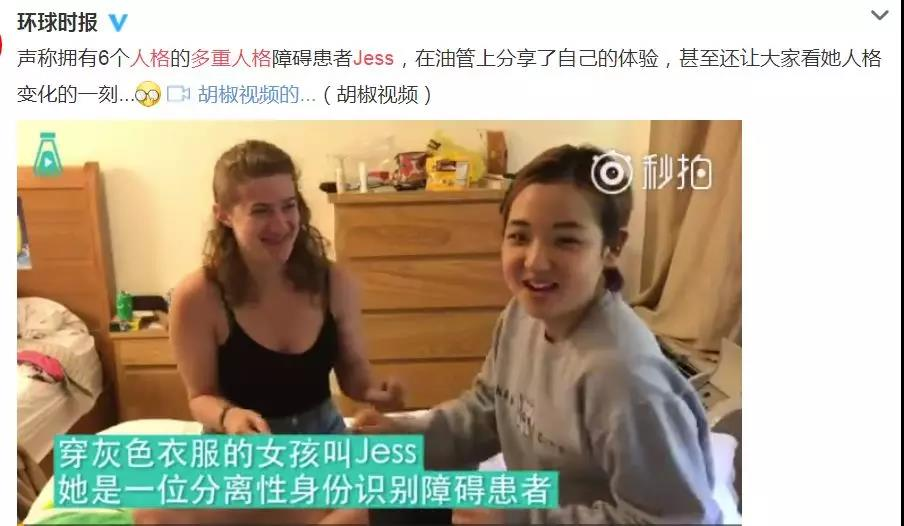
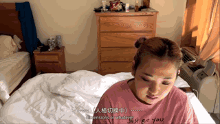
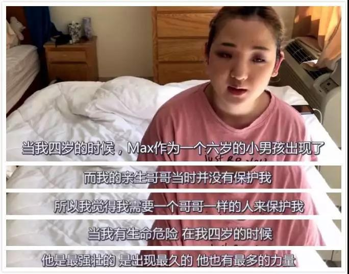
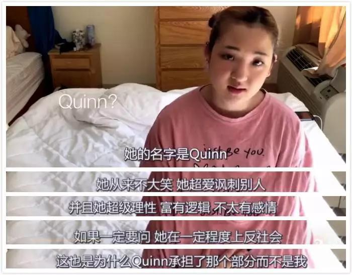
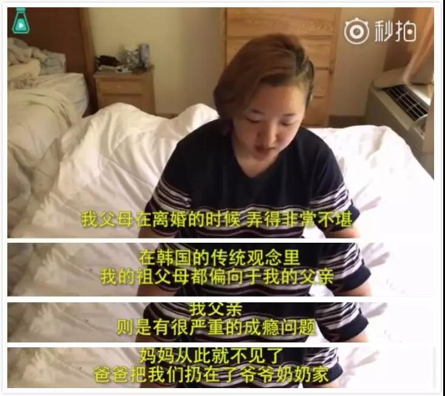
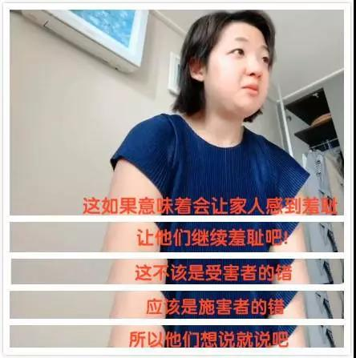

首 页
首 页 量 表
量 表 培 训
培 训 资 讯
资 讯 视 频
视 频 关 于 我 们
关 于 我 们
资讯> 19岁女孩分裂6重人格被疑演戏
19岁女孩分裂6重人格被疑演戏
19岁女孩分裂6重人格被疑演戏：你的无知，正在谋杀每一个想活下去的人
壹心理主笔团 | 蓝莓小姐
她只是想更好地活下去
最近，微博上有个叫 Jess 的 19 岁女孩很火。
她是 MIT（美国麻省理工学院）的学生，会多国语言。自称身体里有 6 个人格。她在 youtube 上讲述自己的多重人格经历，引起热议。
在视频录制过程中，正巧发生了一段人格转换，从主体人格 19 岁的 Jess 到 13 岁的 Alex。
很多人佩服她的勇气，也有不少人在网络上骂她“活脱脱一个戏精”，“假的要死”或“演技真的不行”。
但其实，女孩已被 3 名心理医生确诊为 DID，在美国精神疾病诊断标准中，称为“分离性身份识别障碍”，即多重人格障碍。
当她回到韩国，就连她自己的亲身父母也觉得她不应该把这件事情说出来，觉得很羞耻。
看完了所有视频发现：所有人格都只是 Jess 的保护者，为了让她过得更好而已。
4 岁的时候，她因经历无法弥补的严重创伤，开始分裂出不同人格。
除了第一个主人格 Jess 外，最先出现的是 6 岁男孩 Max 。
Jess 四岁遭遇生命危险，她需要一个哥哥来保护她，但自己的亲哥哥又没有做到，所以 Max 就出现了。为了保护 Jess，Max 封存了大部分关于这件事的记忆，所以 Jess 童年记忆有很多空白。
13 岁遭遇校园霸凌，同样没人保护她。于是 13 岁的 Alex —— Max 的姐姐出现了，填补了她最好的朋友的位置，帮助 Jess 交朋友。
第四个人格，21 岁的 Casey 是一个很有趣的女孩，她喜欢大笑，Jess 向往这样的女孩。

第五个人格 Quinn 是 Casey 的双胞胎，毒舌，几乎不笑，特别会讽刺人，有点反社会性格。但她承担了她内心阴暗的部分，这个人格保护她不受欺负。
第六个人格，Jade 31 岁，她感觉上是所有人格的妈妈。超级懒，但会帮助 Jess 处理“成年人的事情”。
其实，这种自我保护很好理解。
当一个人受到巨大伤害和冲击又没有人站出来，感觉太可怕了。她从自己变出不一样的自己，保护自己，不至于被痛苦撕裂成碎片。
Jess 小时候父母离婚，妈妈出走，爸爸有成瘾行为，留下她和爷爷奶奶生活。
4 岁因生命受到威胁生成六岁的小哥哥人格保护自己
13 岁因为校园霸凌生成同岁闺蜜的人格保护自己
因为恐惧生成一个理性毒舌的人格保护自己
因为缺爱生成 31 岁像妈妈的人格保护自己......
她只是想更好地活下去。
我们每个人都会这么做。只是我们足够幸运，没有遭受这样的伤害而已。
遭受伤害，并不是她的错。所以她告诉父母：如果我让家人感到羞耻，就继续羞耻吧。“这不该是受害者的错，应该是加害者的错。”
她感谢帮助她的心理治疗师和机构，“如果没有心理医生，我可能不会坐在这里......我还找到了人生第一份工作。”

一个在四岁开始患多重人格障碍（DID )，通过自己努力考上麻省理工，没有放弃不断寻求治疗，并坦诚分享自己的故事，希望给予更多人力量的 19 岁女孩。
她是强大的。
而为什么有些人觉得这样勇敢的人活得很“羞耻”？
这可怕的“病耻感”来自于哪里？
我从来不是一个脆弱的人
事实是，当人无法面对真实的自己时，他也无法面对真实的别人。
当我们对自己感到羞耻时，也会觉得别人很羞耻。
前几天，21 岁的女孩在峨眉上跳崖。
游客纷纷向她大喊“快回来”、“听听我们的话”、“你还有爸爸妈妈”，她还是背对悬崖，纵身一跃。
她在遗书中称自己得了抑郁症。
有人回忆：“几个月前还说今年要去当兵，一直很积极很乐观啊”。怎么会这样？
其实她一直都在演“一个正常人”。
女孩说，她必须在“所有人面前装得谈笑自如，云淡风轻，就像在展示之前控制不住地说出自己患有抑郁症这件事是个笑话一样……我竭力扮演一个所谓正常人的样子….”
“我演的够像，所有人都被瞒的很好。”
为什么要演？
因为她“不是没有倾诉过，不是没有尝试过救自己，也不是没有尝试过求救….然而要不就是被当成笑话，要不就是觉得我想不开。”
即使在她死后，还有人说“有病就去治疗呀”。
她问，“你成功地把我一步步逼上绝路，你很有成就感了吗？”
很多人觉得得心理疾病的人是因为脆弱。
她说：不是的，我从来不是个脆弱的人。
她曾去旅游，去蹦极，换个地方生活，坚持运动、跑步、旅行…… 她尝试了无数办法拯救自己，这不是一个脆弱的人能够做到的事情。
她或许没有你想的那么强大，但不可否认的是，她拼尽全力抗争过。
抑郁症患者在全世界约3.4 亿，这还只是确诊的数字。潜在数量更多。说它是心灵的感冒毫无为过，只是难以治愈。
真正脆弱的，难道不是那些不敢直视生命真相的人吗？